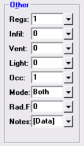

Other (Room Data, Default Room Data Windows) |
  
|
Other (Room Data, Default Room Data Windows) |
|

Number of Registers (Regs): Specifies the number of registers present that will be supplying conditioned air into the room, or zero to let the program determine the number. After the CFM for this room has been calculated, the CFM per runout will simply be the room's supply CFM divided by the number of registers specified for this room. Enter a zero if you want to have the number of registers calculated for this room based on the CFM Per Register entered on the General Project Data window. Enter a minus one (-1) if you want to force the number of registers to remain at zero for this room, in order to bypass this room in the ductsize calculations. If you want this room to have a certain number of registers independent of its supply CFM, then enter a number greater than zero. Valid range for this input is from minus one to nine registers.
Infiltration Required in CFM (Infil): You should normally account for infiltration on the summer and winter infiltration inputs on the System Data window (click the menu " Project | System Data"). But If you would like to control the amount of infiltration for this room, you can enter an infiltration CFM here. This room's system will still receive the same amount of total infiltration which you enter on the System Data window for winter or summer, unless of course the total of what you enter at the room level exceeds that which you specify for the system itself. In that case, what you have entered for the rooms will govern the total system infiltration, and only those rooms (in that system) for which you have specified infiltration CFM will receive any infiltration. Note that this field accepts CFM only, no air changes per hour values are valid.
Ventilation Required in CFM (Vent): You should normally enter ventilation on the System Data window and not in this input at the room level. You should only use this input if you understand the purpose of it and your particular situation calls for entering your ventilation air on a room-by-room basis. Otherwise, leave this input at zero and enter your ventilation in the summer and winter ventilation inputs on the System Data window (click the menu "Project | System Data"). Ventilation air is fresh air that is mechanically brought in through the return side of the air handler.
This input is only used when you have the relatively rare situation of needing to specify your total system ventilation on a room-by-room basis, where rooms in the system may have different outdoor air requirements, such as in a light commercial project. If you do use this input, the program will use either the total amount entered here for the rooms, or the amount entered for the system, whichever is greater. Note that this field accepts CFM only, no air changes per hour values are valid.
Lighting in Watts (Light): This entry is intended to be filled in primarily for commercial projects since residential heat gain calculations typically do not account for lighting. Enter the total heat gain, in Watts, that the light fixtures in this room will produce, including heat produced by lamps, ballasts, etc.. The wattage you enter here will be converted to Btuh by the formula 1 Watt = 3.41 Btuh. Note that if the building is lighted by fluorescent lights (as is the case in most light commercial jobs) then you must enter in the lighting load for each room here. To determine the lighting load, add up the Wattage and then add another 100-200 Watts per fixture for the ballast load. The valid range of values for this field is 0 to 99,999 Watts.
Occurrences of Room (Occ): Determines the number of times this room occurs in the building. The usual value for this input is "1." However, if you have a room that is repeated frequently throughout the building, such as an office with just internal loads, rather than entering it over and over again, you should input the room just once, then using this input declare how many times it occurs in the building. Note that if you wish to temporarily deactivate a room so that you could use it again later, you should enter that it occurs zero times.
Calculation Mode (Mode): Determines whether this room is to be heated, cooled or both. If a room is to be heated but not cooled, that room will be completely ignored in the cooling calculations, including those that have to do with the area and volume of the rooms, such as an air changes per hour of infiltration entered for the system.
Rad.F: Specifies the radiant floor Btuh per square foot output for this room's radiant floor. Click the dropdown help button to open the Radiant Floor Properties dialog, which lets you enter additional data.
Notes: Click the button beside this input to open the Room Notes window, where you can enter notes in the form of formatted text and/or graphics for the current room.